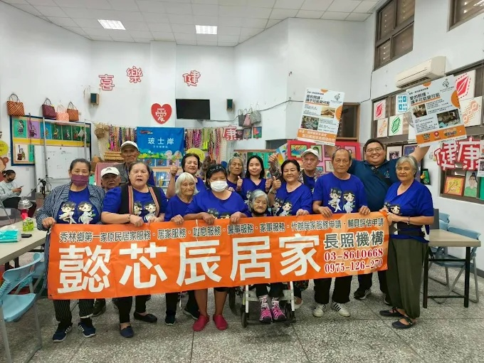
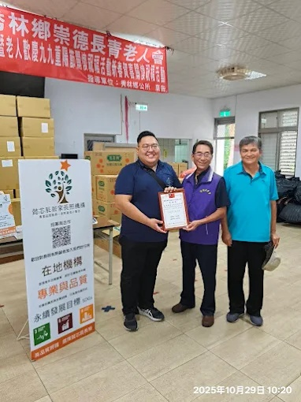
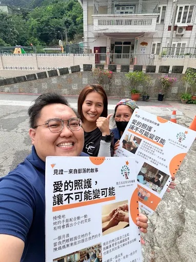
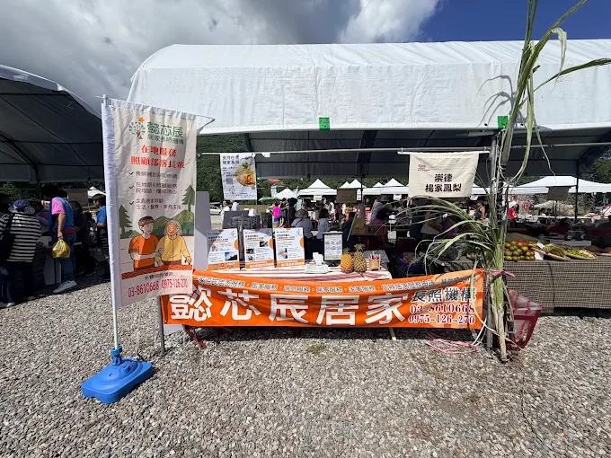
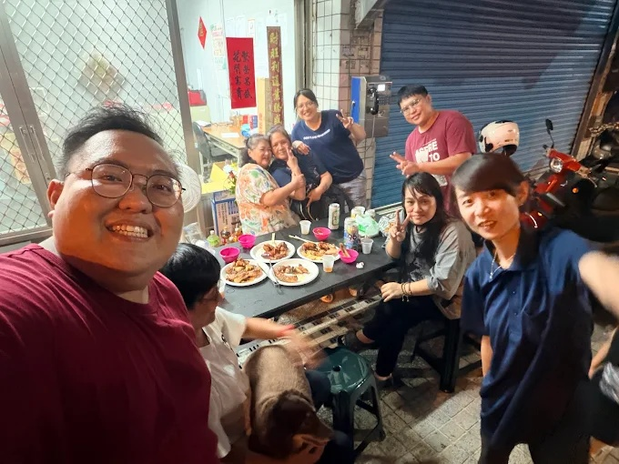
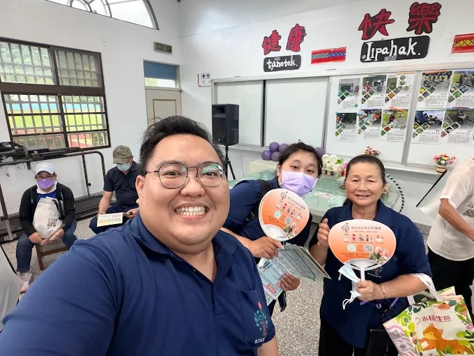

花蓮縣政府立案
長照3.0特約機構
讓家人留在家裡，
讓照顧有人陪您一起扛
懿芯辰居家長照，由在地16人專業團隊提供居家服務、喘息服務與短照服務。服務秀林鄉、壽豐鄉的長輩、身障朋友與太魯閣族鄉親。
🏛️
政府立案
花蓮縣核准
📋
長照3.0特約
補助適用
🌿
秀林+壽豐
在地深根
👥
16人專業團隊
照服員+督導
🌏
多語服務
越印英中
我們在花蓮，我們在您身邊
從部落到市集，從社區活動到老人會，懿芯辰的腳步遍及秀林鄉、壽豐鄉各個角落

與秀林鄉長輩們的大家庭合照 — 這就是我們服務的動力

長青老人會頒獎肯定

見證來自部落的故事

走入在地市集，推廣長照服務

團隊活力日常

熱情參與在地活動
真實照顧故事
「家住崇德村的張奶奶，原本非常排斥讓外人幫忙洗澡。經過我們專業照服員小美充滿耐心的三次拜訪與聊天建立信任後，現在張奶奶每天都期待小美來家裡，不僅身體乾淨了，笑容也變多了。」
住院中？現在就可以開始安排！
很多家屬等到出院後才開始找長照服務，白白等了好幾週。其實在醫院裡就可以提前啟動，讓長輩出院當天就有人照顧。
建議選擇
醫院直接轉介
約 1 週
由醫院出院準備護理師協助，流程最短，出院後幾乎立刻可以開始服務
一般情況
出院後社區轉介
2 週以上
出院後才開始申請、等待評估，這段期間長輩往往缺乏照顧，家屬壓力很大
醫院設有出院準備護理師，專門協助病人銜接出院後的照顧服務。
只要在住院期間向護理站提出申請，並指定懿芯辰居家長照服務，就能以最快速度完成轉介，讓長輩出院後立刻得到在地、溫暖、貼心的居家照顧。
🏥 醫院轉介三步驟
1
住院期間，向護理站說一句話
「我想申請出院後的居家長照服務」，護理師會幫您聯繫院內的出院準備護理師
關鍵：住院中就可以做，不用等到出院
2
3
出院後，最快一週內照服員到府
轉介完成後我們主動聯絡安排，讓長輩出院後馬上有人照顧，家屬不用獨自撐著
無縫接軌，出院不再是家屬最恐慌的時刻
專業長照三合一服務
針對不同家庭的痛點，我們提供客製化的解方
🛁
居家服務
維持乾淨與尊嚴，讓長輩舒適留在熟悉的家。
- 協助沐浴、盥洗、如廁
- 備餐、餵食、協助服藥
- 翻身拍背、關節活動
- 陪伴就醫與外出
長照3.0補助可用
🌸
喘息服務
專為「家屬」與「外籍看護」設計的放鬆時刻。
- 讓壓力過大的家屬能獨自出門散心
- 外籍看護每月休假（約10小時），由我們專業接手
- 免除家屬自己照顧的技術擔憂
- 提升外籍看護長期的照護品質
長照3.0補助可用
🗓️
短照服務
提供有外勞家庭「更長天數」的完美支援。
- 外籍看護親友來台聚會需請假
- 外籍看護想回國過年過節（一週或以上）
- 我們提供密集照顧，完美補足空窗期
依個案評估補助

費用說明：政府高度補助
長照服務以「項目」計費，政府依照收入身分負擔大部分費用。
長照3.0依照 家庭收入 分三類，收入越低補助越多。最多只需自付 16%，最少只需 5%。
| 身分類別 | 政府補助 | 您只需負擔 |
|---|---|---|
| 一般戶（第一類） | 84% | 16% |
| 中低收入戶（第二類） | 95% | 5% |
| 低收入戶（第三類） | 100% | 0% (免費) |
費用試算範例：
若申請「沐浴服務」（單次核定價 325 元），每週使用 5 天，一個月共 23 天（總價 7,475 元）。
👉 一般戶 每月只需負擔 1,196 元。
👉 中低收入戶 每月只需負擔 373 元。
👉 低收入戶 每月 0 元。
※ 實際費用將依據照管中心評估之客製化照顧組合為準。
若申請「沐浴服務」（單次核定價 325 元），每週使用 5 天，一個月共 23 天（總價 7,475 元）。
👉 一般戶 每月只需負擔 1,196 元。
👉 中低收入戶 每月只需負擔 373 元。
👉 低收入戶 每月 0 元。
※ 實際費用將依據照管中心評估之客製化照顧組合為準。
我們的專業團隊
每一位都是有心、有愛的在地照顧人員
14
名照顧服務員
2名具護理系背景
2
位督導
全程品質把關
100%
持合格證照
政府核發證明
📜
合格證照
所有照服員均持有政府核發之照顧服務員訓練結業證書
🔄
定期在職訓練
持續接受專業在職訓練，確保服務品質符合最新標準
🏡
固定照服員
盡量安排固定人員，讓長輩建立熟悉感與安全感
📱
定期回報
督導定期向家屬回報長輩狀況，讓外地家屬也能安心
為什麼選擇懿芯辰？我們的四大堅持
建立品牌信任感，我們用專業與在地溫情守護您的家人
📊
專業與制度的扎實執行
跨專業研討與小組制度：我們不只是單兵作戰，透過定期召開跨專業研討會與照服員小組討論，確保每位個案的照顧計畫都能與時俱進，給予最適切的服務。
品質改善循環：透過嚴謹的服務稽查與家屬反饋，我們將「品質改善」視為日常，而不僅僅是為了應付評鑑。
品質改善循環：透過嚴謹的服務稽查與家屬反饋，我們將「品質改善」視為日常，而不僅僅是為了應付評鑑。
🌱
青年返鄉的在地情懷
在地青年，深耕服務：創辦人帶著熱忱返鄉，因為了解這片土地的長輩與文化，所以更能提供具有「家溫度」的照顧服務。
文化共鳴與尊重：深知部落與地方文化的重要性，將原住民餐食、傳統歌謠等元素融入服務中，讓長輩在熟悉的文化氛圍中安心生活。
文化共鳴與尊重：深知部落與地方文化的重要性，將原住民餐食、傳統歌謠等元素融入服務中，讓長輩在熟悉的文化氛圍中安心生活。
📖
持續精進的學習型組織
專業職能提升：機構定期舉辦專業訓練（如CPR+AED訓練），確保第一線同仁具備最新的急救知識與照護技能。
教學與傳承：積極參與人才培育（如規劃實習場域與教學合作），展現我們對長照產業永續發展的承諾。
教學與傳承：積極參與人才培育（如規劃實習場域與教學合作），展現我們對長照產業永續發展的承諾。
🤝
社區共融與資源整合
跨單位資源連結：我們不只是居家服務提供者，更是社區的一分子。透過與崇德長青老人會等在地組織合作，建立更綿密的社區照顧網。
懿芯辰大紀事：里程碑與願景
一步一腳印，我們與在地一起成長，用時間證明我們的承諾
112年 11月
成功設立
懿芯辰正式啟航，開啟在地服務新篇章。
113年
推動特色服務
導入多元文化照顧：融合原住民餐食、圖騰、傳統歌謠，打造具文化認同的照護環境。
114年
評鑑合格
榮獲居家式長照評鑑合格，專業品質深獲公部門肯定。
115年
在地深度合作
攜手「崇德長青老人會」成立社區關懷據點，深化社區連結與共融。
未來展望
永續守護
持續提升服務量能，成為花蓮在地最值得信賴的長照夥伴。
外籍看護的好幫手
當您需要請假，又擔心沒人照顧雇主家的長輩？台灣政府有解決方案
💡 台灣長照3.0可以幫您的雇主
🇻🇳 Tiếng Việt
Khi bạn cần nghỉ phép, chính phủ Đài Loan có dịch vụ chăm sóc thay thế (喘息服務) — người chăm sóc chuyên nghiệp sẽ đến nhà thay bạn. Gọi: 0975-126-270
🇮🇩 Bahasa Indonesia
Saat Anda perlu cuti, pemerintah Taiwan punya layanan perawatan pengganti (喘息服務) — petugas profesional menggantikan Anda. Hubungi: 0975-126-270
您可以把這個資訊告訴您的雇主，或直接請雇主撥打我們的服務電話。我們用中文與雇主溝通，協助辦理所有申請手續。
我們懂您的擔心
很多家屬都有這些疑慮，讓我們一起面對
「爸媽不願意讓外人進家門，怎麼辦？」
我們的做法先陪您一起家訪，讓長輩慢慢認識照服員，建立信任後才開始服務，完全不強迫。
「長照申請很複雜，不知道怎麼開始…」
我們的做法只要打一通電話，我們協助聯絡照管中心、陪同評估，所有手續都有人幫忙。
「我在外地工作，沒辦法常回花蓮照顧…」
我們的做法督導定期向您回報長輩狀況，讓您在遠方也能掌握，安心工作不用每天擔心。
申請服務，只要四步驟
從第一通電話到開始服務，全程陪您走
1
聯絡我們
電話或Line諮詢，免費初步評估
2
協助申請
陪您向長照管理中心提出評估
3
到府評估
照管專員到家評估，擬定計畫
4
開始服務
安排固定照服員，正式開始
服務範圍
無論戶籍在哪裡，只要您的家人居住在以下地區，就能享受我們的溫暖服務
常見問題
家屬最常問我們的問題（點擊可展開回答）
我住在秀林鄉或壽豐鄉，你們可以到府服務嗎？
可以！我們服務秀林鄉全區及壽豐鄉，戶籍不在花蓮也沒關係。懿芯辰本部位於富世村，是您最近的選擇。
家人目前住院，什麼時候可以開始申請長照？
現在就可以！住院期間向護理站說「我想申請居家長照服務，指定懿芯辰」，由醫院出院準備護理師轉介，最快一週內即可開始服務，比出院後再申請快一倍以上，千萬不要等！
原住民族幾歲可以申請長照？
原住民朋友55歲即符合長照申請資格，比一般民眾早整整10年。秀林鄉太魯閣族鄉親歡迎來電，我們熟悉申請流程，快速協助辦理。
家裡有外籍看護，還需要長照服務嗎？
可以同時使用！外籍看護請假時，可以申請喘息服務讓我們的照服員來代班，雇主不用擔心空窗期。兩者並行，互不影響。
不知從何申請？讓我們幫您免費評估
無論是想了解補助資格、費用試算，或是外籍看護請假需要代班，
都歡迎直接加入我們的 Line 官方帳號，由專人為您解答。
聯絡懿芯辰
歡迎電話、Line 或預約到府說明，沒有任何壓力
機構地址
花蓮縣秀林鄉富世村
8鄰富世145-2號
8鄰富世145-2號
歡迎預約參觀
懿芯辰居家長照機構
專業品質服務 · 長照最佳小幫手